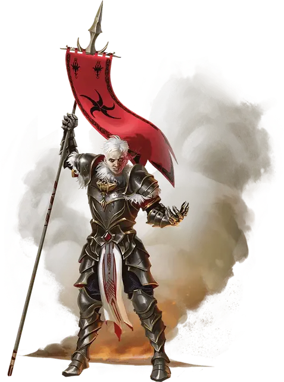

Кансалди Огнеглазая
Kansaldi Fire-Eyes
Средний Гуманоид (Человек, Жрица), законно-злой, именной НИП

Класс Доспеха 18 (латы)
Хиты 172 (23к8 + 69)
Скорость 30 футов
| мод | спас | ||
|---|---|---|---|
| СИЛ | 18 | +4 | +4 |
| ЛОВ | 11 | +0 | +0 |
| ТЕЛ | 17 | +3 | +3 |
| мод | спас | ||
|---|---|---|---|
| ИНТ | 16 | +3 | +3 |
| МДР | 19 | +4 | +8 |
| ХАР | 16 | +3 | +7 |
Навыки Восприятие +8, Проницательность +12, Религия +7
Иммунитет к урону огонь
Чувства истинное зрение 120 футов, пассивное Восприятие 18
Языки Общий, Бездны, Драконий
Опасность 11 (7200 опыта)
Бонус мастерства +4
Особенности
Особое снаряжение. В левую глазницу Кансалди вставлен ярко светящийся рубин. Драгоценный камень служит ей глазом и дарует истинное зрение (см. выше). Камень нельзя извлечь, пока Кансалди жива. Только после её смерти, действием существо может извлечь камень. В таком виде драгоценный камень будет служить как камень зрения [gem of seeing].
Действия
Мультиатака. Кансалди совершает две атаки Пикой и использует Вспышку пламени.
Пика. . Рукопашная атака оружием: +8 к попаданию, досягаемость 10 фт., одна цель. Попадание: 9 (1к10 + 4) колющего урона плюс 16 (3к10) урона излучением.
Вспышка пламени. Кансалди бросает магическое пламя в существо, которое она может видеть в пределах 60 футах. Цель должна совершить спасбросок Ловкости Сл 16. При провале цель получает 11 (2к10) урона огнём и загорается. Пока существо действием не потушит огонь, цель получает 5 (1к10) урона огнём в начале каждого своего хода. При успехе цель получает половину этого урона и не загорается.
Использование заклинаний. Кансалди накладывает одно из следующих заклинаний, не нуждаясь в материальных компонентах. Её базовой характеристикой является Мудрость (Сл спасброска 16):
• Неограниченно: свет [light], уход за умирающим [spare the dying], чудотворство [thaumaturgy];
• 1/день каждое: возрождение [revivify], малое восстановление [lesser restoration], небесный огонь [flame strike], рассеивание магии [dispel magic], стена клинков [blade barrier].
Бонусные действия
Благосклонность Королевы драконов. Кансалди и одно существо, которое она может видеть в пределах 60 футов от себя, магическим образом восстанавливают 17 (2к12 + 4) хитов.
Описание
Великий мастер драконов Кансалди Огнеглазая возглавляет наступление Красной драконьей армии в Соламнии. Фанатичная последовательница Королевы драконов, Кансалди была посвящена в поклонение этой богине Повелителем драконов Верминаардом. В ходе испытания веры, проведённым её наставником, Кансалди заменила свой левый глаз на камень зрения. Этот камень дымит и светится красным каждый раз, когда Кансалди использует свою магию, а ее последователи утверждают, что он позволяет ей видеть любую ложь.
Повелитель Верминаард, следуя видениям, посланным Королевой драконов, отправился в поход на юг. На время отсутствия он оставил под командованием Кансалди могущественный контингент Красной Драконьей армии и приказал ей захватить Каламан во имя Королевы драконов. Кансалди приступила к выполнению этого приказа с фанатичным рвением. Для нее не существует возможности поражения — есть лишь воля Королевы драконов.